1、 了解共享式网络嗅探的基本原理。
2、 掌握抓包工具的使用方法，如sniffer，iptools。
3、 通过使用Sniffer或iptools进行网络监测、捕获报文。
1、 认真阅读和掌握本实验相关的知识点。
2、 上机实现软件的基本操作。
3、 得到实验结果，并加以分析生成实验报告。
注：因为实验所选取的软件版本不同，学生要有举一反三的能力，通过对该软件的使用能掌握运行其他版本或类似软件的方法。
1、 实验环境
本实验运行环境如图1，需要用到靶机服务器。
靶机服务器配置为win2000 Server,未打任何补丁，安装了ftp服务器，并允许FTP匿名登录。
学生在实验主机上通过FTP登录的方式与靶机服务器建立通信，在实验主机上利用Sniffer Pro软件或iptools来嗅探网络中数据包，从而分析数据包收发的相关协议和数据包格式。
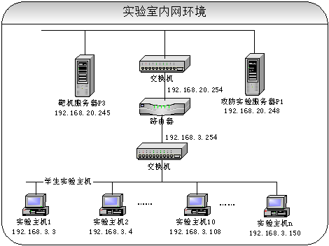
图1 实验环境
2、步骤
2.1 Sniffer的使用
本实验需要使用Sniffer来嗅探往来于实验主机和靶机服务器之间的数据包，可以通过FTP登录的方式与靶机建立通信，然后具体分析数据包的格式和内容。
1）Sniffer的启动
启动Sniffer Pro软件后可以看到它的主界面，如图2所示。
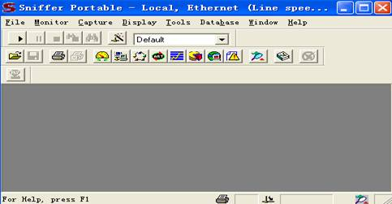
图2 Sniffer 主界面
网络监视面板Dashboard可以监控网络的利用率、流量以及错误报文等内容，如图3所示。
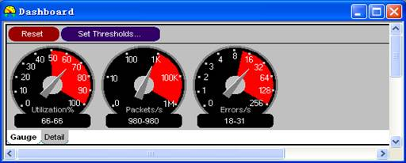
图3 监控板
Host table可以直观地看出连接的主机，如图4所示，显示方式为IP方式。
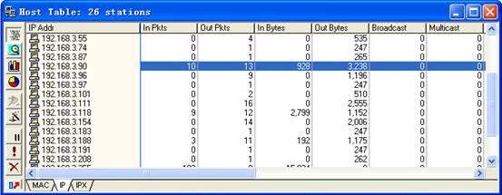
图4主机列表
2） 捕获FTP数据包并进行分析
（1）通过FTP匿名登录到靶机服务器，首先需要知道靶机服务器的IP地址。在下面的例子中假设该靶机IP地址为192.168.20.245；在实际实验过程中由实验教师告知靶机服务器IP地址。
【问题1】如果靶机服务器装上防火墙，它可以被嗅探到吗？
（2）选中Monitor菜单下的Matirx或直接点击网络性能监视快截键，此时可以看到网络中的Traffic Map视图。如图5所示。
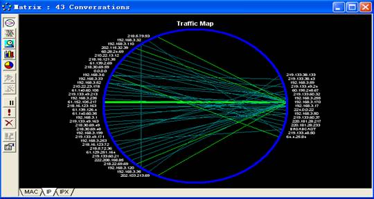
图5 Matrix视图
（3）进行简单的选择配置，单击菜单中的Capture->Define Filter->Advanced,再选中IP->TCP->FTP，单击OK。如图6所示。
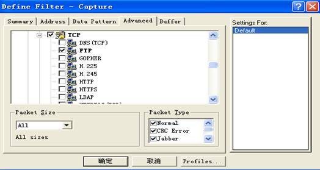
图6过滤器选项
（4）回到Traffic Map视图中，用鼠标选中要捕捉的靶机服务器IP地址，选中后IP地址以白底高亮显示。如图7所示。
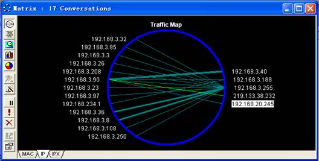
图7 捕获指定IP主机的数据包
（5）开始捕捉后，单击工具栏中的Capture Panel按钮，图中显示捕捉的Packet的数量。如图8所示。
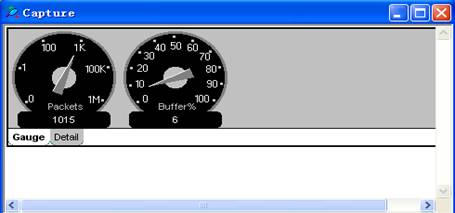
图8 Capture Panel 窗口
（6）打开flashfxp，点击“快速连接”按钮。如图9所示
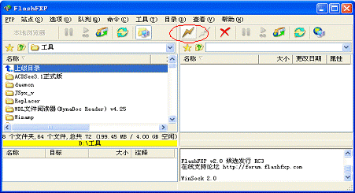
图9 FlashFxp界面
（7）点击“快速连接”按钮后出现快速连接对话框，在快速连接对话框中输入目标FTP服务器IP地址，注意勾选匿名复选框，如图10所示。
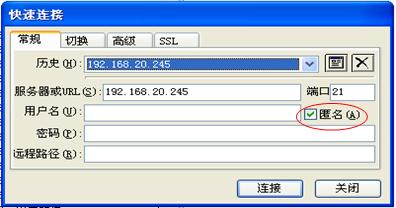
图10 快速连接对话框
（8）匿名登录到靶机服务器的FTP，如图11所示。
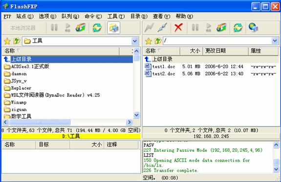
图11
登录FTP界面
（9）从Capture Panel中看到扑获数据包已达到一定数量，单击Stop and Display按钮，停止抓包。如图12所示。
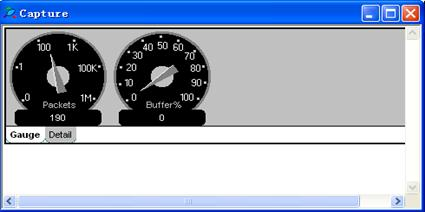
图12 停止捕获并显示数据
（10）停止抓包后，单击窗口左下角的Decode选项，窗口会显示所捕获的数据，并分析捕获的数据包。如图13所示。
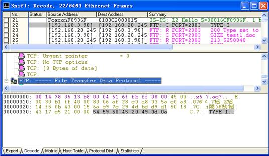
图13 Decode界面
【问题2】：请根据各个实验的实际情况对所捕获的数据包进行具体分析，从中能得到什么信息？
3） 捕获icmp数据包并分析
（1）首先在sniffer中进行过滤选项设置，以便能够捕获icmp包。再点击WINDOWS的开始->运行；
（2）在弹出的运行对话框中输入cmd，然后单击确定，如图14所示。
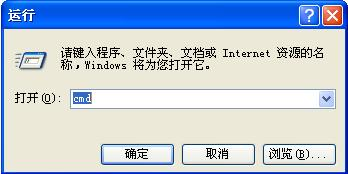
图14 运行对话框
（3）确定后出现cmd对话框，如图15所示；
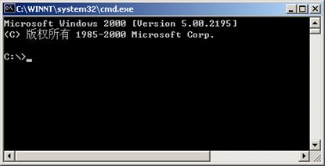
图15 cmd对话框
（4）在cmd对话框中输入命令ping 192.168.20.245，然后按回车，结果如图16所示。
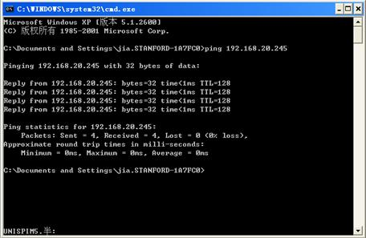
图16 ping命令对话框
（5）停止抓包后，单击窗口左下角的Decode选项，窗口会显示所捕获的数据，并分析捕获的数据包。如图17所示。
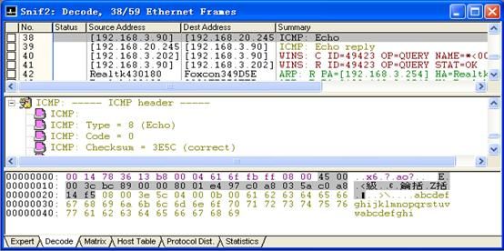
图17 Decode界面
从图17第38个包中我们可以看到，数据包的源地址和目的地址分别为192.168.3.90和192.168.20.45，使用了ICMP协议。并且还可以具体分析出ICMP的各项参数值。
【问题3】：请根据各个实验的实际情况对所捕获的数据包进行具体分析，从中能得到什么信息？
4） 捕获多种数据包并分析
下面随意捕获网络中的数据包并进行分析。
（1）
选中Monitor菜单下的Matirx或直接点击网络性能监视快截键，此时可以看到网络中的Traffic Map视图，如图18,可见明显的亮线，他们表示两个IP之间正在进行连接和数据通信。
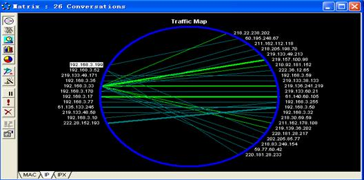
图18 网络流量图
（2）
点击左边第二个按钮“outline”,出现如图19所示的界面，它详细列出了两个主机之间相互通信发送和接受的包个数和数据流量。我们点击“Packets”，显示就如图19，按照收发包的个数从大到小的排列。我们可以分析得出，目前网络上数据流量最大的是正在通信的两台主机，IP分别为192.168.3.108和202.115.32.129
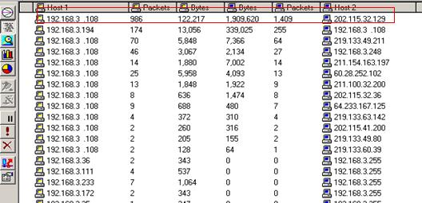
图19 outline分析流量图
（3）
点击左边第三个按钮“detail”,出现如图20所示界面。它详细显示了IP连接的情况和使用的协议。如IP为192.168.3.169的主机正在与IP为219.150.227.69的主机进行通信，且使用Http协议，那我们可以推断该IP用户正在浏览网页。
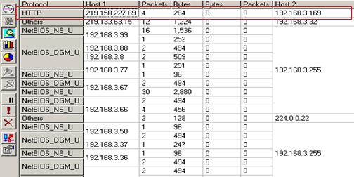
图20 detail详细数据分析图
（4）
点击左边第四个“pie”，出现详细的饼状分析图，如图21所示。我们可以看到，该图中绿色区域占82.34％，它表示目前网络中数据流量最大的两台通信主机，即192.168.3.108―202.115.32.129。同理可以分析其他颜色区域。
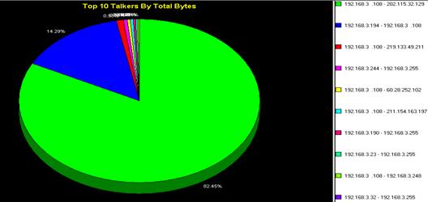
图21 数据分析饼图
3、iptools的使用
1） iptools的启动
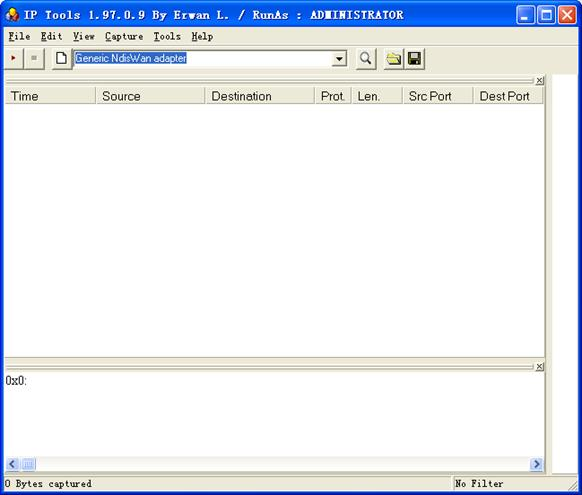
图22 iptools主界面
2）抓取ftp数据
（1）设置网卡
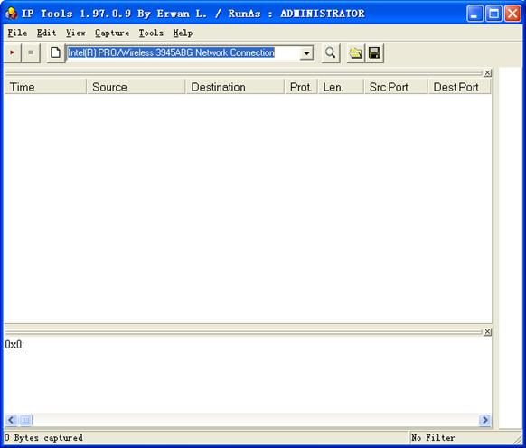
图23 设置网卡
点击按钮，开始抓取该网段内的数据包。
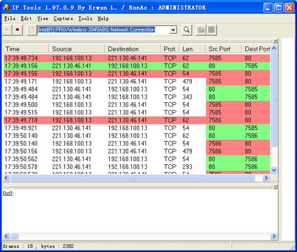
图24 嗅探数据包
（2）学生机访问ftp服务器。
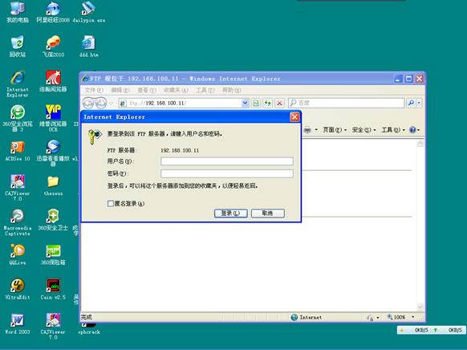
图25 连接ftp服务器
输入用户名test1和密码123456。
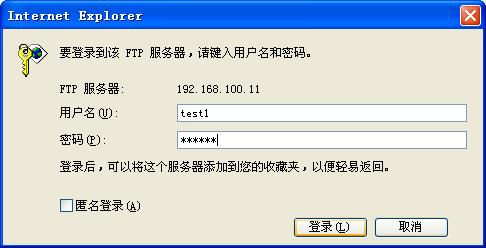
图26 输入账号和密码
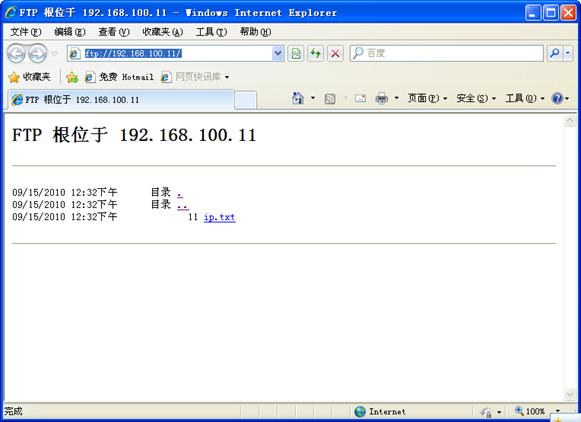
图27 浏览ftp目录
观察iptools嗅探到的ftp协议数据。
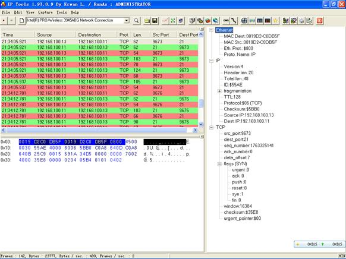
图28 ftp协议数据
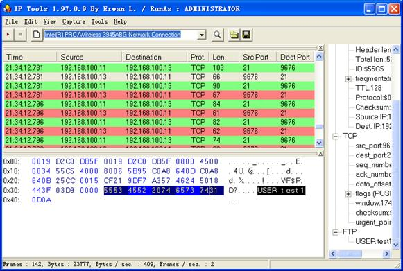
图29 嗅探到ftp账号为test1
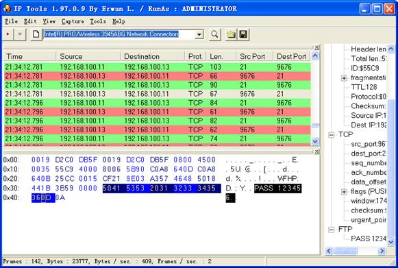
图30 嗅探到密码为123456
通过使用Sniffer软件和iptools对网络进行监控，进行报文捕获并对捕获报文分析，可以了解网络状态。